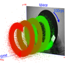

jAER / Install Guide

Install Guide
Production installers bundle Eclipse Temurin JDK 25. You do not install Java yourself. Download from jaerproject.org or GitHub Releases.
Windows
Download jAER_windows-x64_*.exe and run it. Current builds are Authenticode-signed (publisher Tobias Delbruck).
- SmartScreen may still say Windows protected your PC until the signature has enough downloads. Use More info → Run anyway.
- If Smart App Control blocks the launcher, allow the app or turn that feature off.
Unattended (winget)
After the winget catalog entry is published (it is not, until Microsoft merges it):
winget install --silent SensorsINI.jAERThat can install the signed build even while SmartScreen still warns. Until the catalog entry is merged, use the .exe above.
USB cameras
- If jAER reports
LIBUSB_ERROR_NOT_SUPPORTED, bind WinUSB with Zadig (not libusb-win32). - Prophesee EVK4 can use Prophesee wdi-simple.
macOS
Pick the DMG that matches the Mac, not the browser. Safari often cannot report Apple Silicon vs Intel.
- Apple menu → About This Mac: Chip Apple M1–M4 →
jAER_macos_aarch64_*.dmg. - Processor Intel →
jAER_macos_*.dmg(noaarch64in the name). - Terminal:
uname -misarm64orx86_64.
An Apple Silicon DMG on an Intel Mac fails with You can’t open the application “jAER … Installer” because this application is not supported on this Mac. Download the Intel DMG instead.
Install
- Double-click the
.dmg(it mounts a disk). - In the Finder window, double-click jAER … Installer.
- Prefer a user folder (
~/Applicationsor~/jaer) unless you want an admin install into/Applications.
Current DMGs are signed with Apple Developer ID and notarized (identified developer Tobias Delbruck). A notarized GitHub DMG should open normally. An older unsigned DMG needs right-click → Open or Privacy & Security → Open Anyway.
Unattended (Homebrew)
Homebrew 6 and later refuse to load this third-party tap until you trust the cask. That prompt is about the tap’s Ruby install script, not the notarized DMG. Trust this cask only, then install:
brew tap sensorsini/jaer
brew trust --cask sensorsini/jaer/jaer
brew install --cask --yes jaerOne command does the same trust for this cask only: brew install --cask --yes sensorsini/jaer/jaer. brew trust sensorsini/jaer would also allow every future cask from the tap.
The cask installs Homebrew libusb, puts jAER in /Applications/jAER, and adds a /Applications/jAER.app symlink. Upgrade with brew upgrade --cask jaer, not Help → Download and install. A DMG install can skip the commands above.
USB cameras (Apple Silicon)
Live USB cameras need Homebrew libusb:
brew install libusbIf the dylib is missing, jAER shows a how-to and quits so the next launch can load it. File playback does not need libusb.
Startup logs
If the splash closes with no window, attach $TMPDIR/jaer/jAER-0.log.
$TMPDIR is not /tmp; it looks like /var/folders/…/T/.
Absence of hs_err_pid*.log or Console crash reports usually means a normal Java exit, not a native crash.
Linux
Download jAER_unix_*.sh. Installers are x64 only.
chmod +x jAER_unix_*.sh
sh jAER_unix_*.shThe .sh installer adds a desktop / GNOME entry. Start jAER from that entry or from the install directory.
Unattended (.deb)
From 3.5.3 the release also has a .deb. It is a GitHub file, not an apt repository, so apt install jaer by name does not work. The homepage Download button stays the .sh.
wget -O jAER_linux-amd64_3_5_3.deb \
https://github.com/SensorsINI/jaer/releases/download/3.5.3/jAER_linux-amd64_3_5_3.deb
sudo apt install ./jAER_linux-amd64_3_5_3.debThe package installs into /opt/jAER and adds an application-menu entry named jAER. Start it from that menu or with /opt/jAER/jaer.
If USB udev rules are missing for a plugged-in jAER device, jAER shows the exact shell command to add the rule(s).
After install
- Installers can download sample recordings (off by default, about 1 GB). You can fetch them later from Help → Sample data. Skipping that download does not roll back the install.
- After this version is GitHub Latest, Help → Check for release updates… → Download and install can self-update (Stable only).
- Testers can install the moving Download Snapshot build from the homepage (current
master, replaced after each quiet period). That channel is not offered by Check for updates. - Video: installing and updating jAER (also covers
git cloneand rebuild from master).
Uninstall
Quit jAER first. Use the install4j uninstaller — do not only delete the folder. It removes the program, Start menu / desktop entries, file associations, and jaer/sampleData in the install folder (including extra files you copied there). It does not delete jaerSampleData in your home folder, Java preferences, USB driver changes, or udev rules you added by hand. If files remain in the install folder, that folder may open so you can inspect them.
Windows
Settings → Apps → Installed apps → search jAER → Uninstall. Or run uninstall.exe in the install folder (often C:\Program Files\jAER). A Zadig WinUSB binding is left as-is.
macOS
A DMG install: in the folder you chose (~/Applications/jAER, ~/jaer, or /Applications/jAER), double-click the Uninstall jAER app. A Homebrew install: brew uninstall --cask jaer (removes /Applications/jAER and the jAER.app symlink). Homebrew libusb is not removed.
Linux
From the install directory of a .sh install:
./uninstallOr use the Uninstall desktop / GNOME entry if the installer created one. sudo is needed only if you installed under /opt (or another root-owned path).
A .deb install: sudo apt remove jaer.
A git clone has no uninstaller: delete that clone.